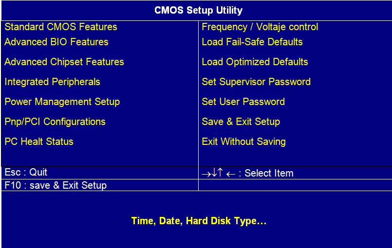

Actividad
El BIOS, del inglés Basic Input Output System, es el software que pone
en contacto los componentes principales del hardware del ordenador con
el sistema operativo.
El software de la BIOS es lo primero que se ejecuta cuando se enciende el ordenador. Este soque comienza
El programa BIOS se almacena habitualmente en un chip de memoria Flash que se sitúa sobre la placa base.
Cuando se arranca el ordenador se inicia la ejecución del software alojado en el BIOS, en ese instante también ha de aparecer una pantalla
en la que se nos informa de cómo acceder al contenido del mismo. Cada modelo de placa base tendrá un sistema de acceso propio, sin embargo lo más
habitual es que se haga pulsando la tecla Supr, Esc, F10 o F1. Tras pulsar en la tecla correspondiente, lo normal es acceder a una
pantalla de selección que variará de una bios a otra, pero tendrá un aspecto similar a:
|  |
| Imagen 31. Recurso propio. |
En la parte superior se recogen las opciones de control que nos permite la BIOS. En la intermedia se informa del proceso de navegación que, en general, se realizará mediante el teclado. En este caso, el cursor permite desplazarse por las distintas opciones. Para entrar en cualquiera de ellas, una vez seleccionada la opción, se pulsa la tecla Intro. En este caso particular, las teclas Esc y F10 se utilizan para salir guardando los cambios o sin guardarlos.
En general, un usuario medio necesitará acceder a la bios en muy contadas ocasiones. Sin embargo, es conveniente conocer algunas de las opciones más habituales y cuándo utilizarlas. La mayoría de estas opciones se encontrarán dentro del apartado Standard CMOS Features y permitirán desde modificar el calendario a definir las características de los dispositivos de vídeo y memoria ram presente en el equipo.
Salvo que tengas muy claro que estás haciendo no es aconsejable alterar valores dentro del BIOS.
El siguiente video explica de forma detallada el funcionamiento de la BIOS de un ordenador genérico.
|
Video 5. www.youtube.com/embed/EwGnn-xBUuI youtube. Copyright |